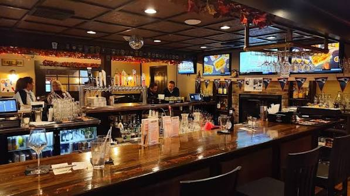

SANDWICH, MASSACHUSETTS · CAPE COD
See you at
The Local.

FIND US
The Local Tavern and Grille
46 MA-6A
Sandwich, MA 02563
HOURS
Open from 11:30 AM
Kitchen closes at 9 PM.
Come by for lunch or dinner, or order ahead for pickup.
Settle in your way.
Outdoor seating, a fireplace and a private dining room give you plenty of ways to enjoy The Local.
Bringing the family?
Absolutely. The Local has plenty for the whole table, including a dedicated kids menu.
View Menu & Order →